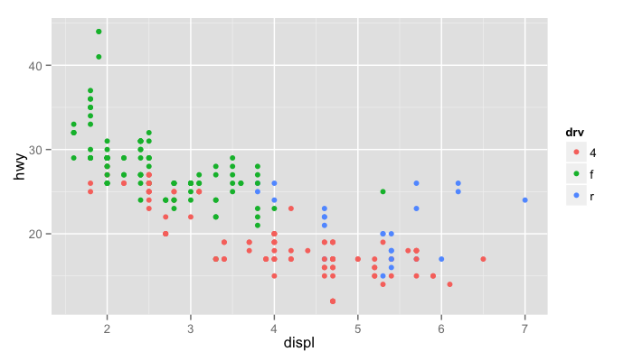
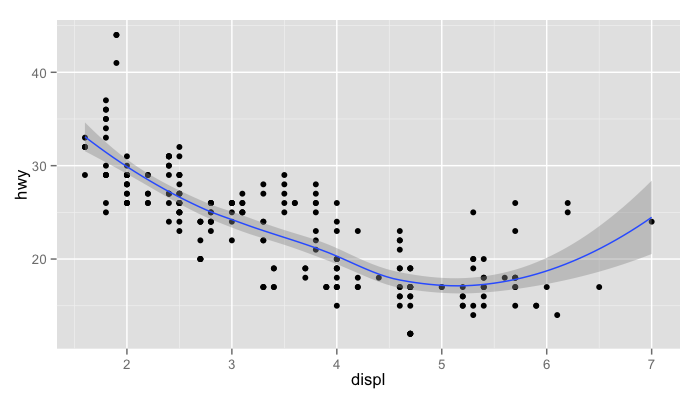
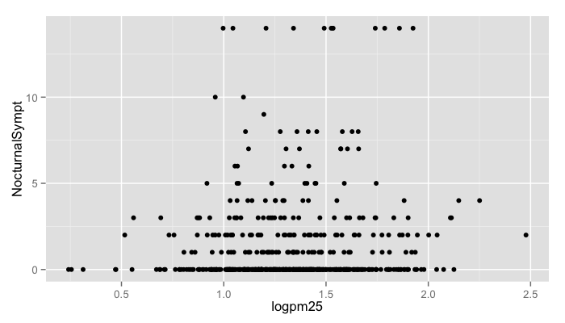
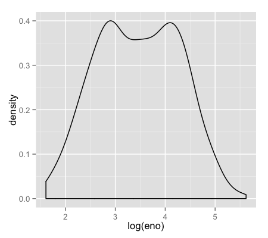
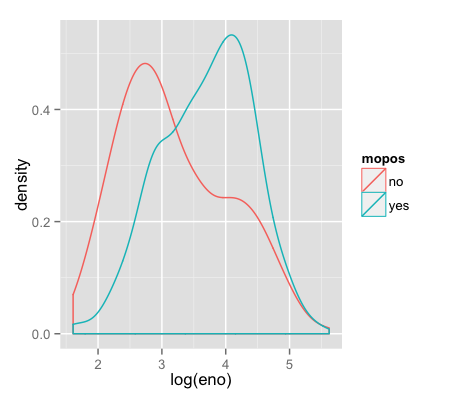
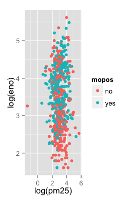
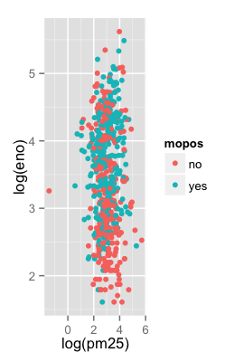
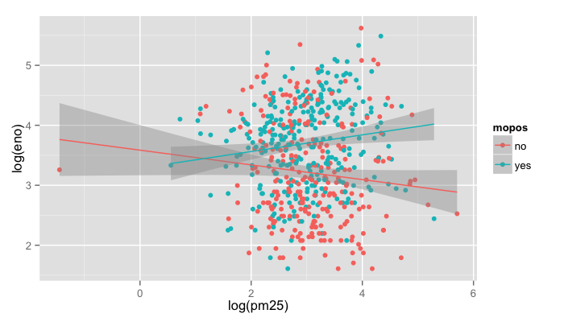
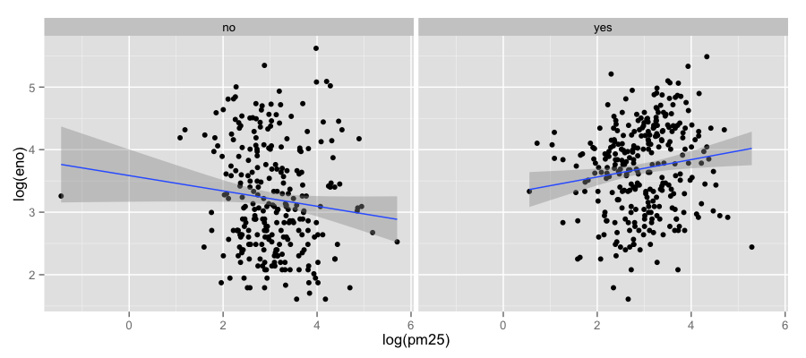

ggplot2: Part I
Slides by Roger D. Peng https://www.coursera.org/specializations/jhu-data-science
What is ggplot2?
- An implementation of The Grammar of Graphics by Leland Wilkinson
- Written by Hadley Wickham (while he was a graduate student at Iowa State)
- A “third” graphics system for R (along with base and lattice)
- Available from CRAN via
install.packages() - Web site: http://ggplot2.org (better documentation)
What is ggplot2?
- Grammar of graphics represents an abstraction of graphics ideas/objects
- Think “verb”, “noun”, “adjective” for graphics
- Allows for a “theory” of graphics on which to build new graphics and graphics objects
- “Shorten the distance from mind to page”
Grammar of Graphics
“In brief, the grammar tells us that a statistical graphic is a mapping from data to aesthetic attributes (colour, shape, size) of geometric objects (points, lines, bars). The plot may also contain statistical transformations of the data and is drawn on a specific coordinate system”
- from ggplot2 book
Plotting Systems in R: Base
- “Artist’s palette” model
- Start with blank canvas and build up from there
- Start with
plotfunction (or similar) - Use annotation functions to add/modify (
text,lines,points,axis)
Plotting Systems in R: Base
- Convenient, mirrors how we think of building plots and analyzing data
- Can’t go back once plot has started (i.e. to adjust margins); need to plan in advance
- Difficult to “translate” to others once a new plot has been created (no graphical “language”)
- Plot is just a series of R commands
Plotting Systems in R: Lattice
- Plots are created with a single function call (
xyplot,bwplot, etc.) - Most useful for conditioning types of plots: Looking at how $y$ changes with $x$ across levels of $z$
- Things like margins/spacing set automatically because entire plot is specified at once
- Good for putting many many plots on a screen
Plotting Systems in R: Lattice
- Sometimes awkward to specify an entire plot in a single function call
- Annotation in plot is not intuitive
- Use of panel functions and subscripts difficult to wield and requires intense preparation
- Cannot “add” to the plot once it’s created
Plotting Systems in R: ggplot2
- Split the difference between base and lattice
- Automatically deals with spacings, text, titles but also allows you to annotate by “adding”
- Superficial similarity to lattice but generally easier/more intuitive to use
- Default mode makes many choices for you (but you can customize!)
The Basics: qplot()
- Works much like the
plotfunction in base graphics system - Looks for data in a data frame, similar to lattice, or in the parent environment
- Plots are made up of aesthetics (size, shape, color) and geoms (points, lines)
The Basics: qplot()
- Factors are important for indicating subsets of the data (if they are to have different properties); they should be labeled
- The
qplot()hides what goes on underneath, which is okay for most operations ggplot()is the core function and very flexible for doing thingsqplot()cannot do
Example Dataset
library(ggplot2)
str(mpg)
'data.frame': 234 obs. of 11 variables:
$ manufacturer: Factor w/ 15 levels "audi","chevrolet",..: 1 1 1 1 1 1 1 1 1 1 ...
$ model : Factor w/ 38 levels "4runner 4wd",..: 2 2 2 2 2 2 2 3 3 3 ...
$ displ : num 1.8 1.8 2 2 2.8 2.8 3.1 1.8 1.8 2 ...
$ year : int 1999 1999 2008 2008 1999 1999 2008 1999 1999 2008 ...
$ cyl : int 4 4 4 4 6 6 6 4 4 4 ...
$ trans : Factor w/ 10 levels "auto(av)","auto(l3)",..: 4 9 10 1 4 9 1 9 4 10 ...
$ drv : Factor w/ 3 levels "4","f","r": 2 2 2 2 2 2 2 1 1 1 ...
$ cty : int 18 21 20 21 16 18 18 18 16 20 ...
$ hwy : int 29 29 31 30 26 26 27 26 25 28 ...
$ fl : Factor w/ 5 levels "c","d","e","p",..: 4 4 4 4 4 4 4 4 4 4 ...
$ class : Factor w/ 7 levels "2seater","compact",..: 2 2 2 2 2 2 2 2 2 2 ...
ggplot2 “Hello, world!”
qplot(displ, hwy, data = mpg)

Modifying aesthetics
qplot(displ, hwy, data = mpg, color = drv)

Adding a geom
qplot(displ, hwy, data = mpg, geom = c("point", "smooth"))

Histograms
qplot(hwy, data = mpg, fill = drv)

Facets
qplot(displ, hwy, data = mpg, facets = . ~ drv)
qplot(hwy, data = mpg, facets = drv ~ ., binwidth = 2)


MAACS Cohort
- Mouse Allergen and Asthma Cohort Study
- Baltimore children (aged 5—17)
- Persistent asthma, exacerbation in past year
- Study indoor environment and its relationship with asthma morbidity
- Recent publication: http://goo.gl/WqE9j8
Example: MAACS
str(maacs)
'data.frame': 750 obs. of 5 variables:
$ id : int 1 2 3 4 5 6 7 8 9 10 ...
$ eno : num 141 124 126 164 99 68 41 50 12 30 ...
$ duBedMusM: num 2423 2793 3055 775 1634 ...
$ pm25 : num 15.6 34.4 39 33.2 27.1 ...
$ mopos : Factor w/ 2 levels "no","yes": 2 2 2 2 2 2 2 2 2 2 ...
Histogram of eNO
qplot(log(eno), data = maacs)

Histogram by Group
qplot(log(eno), data = maacs, fill = mopos)

Density Smooth
qplot(log(eno), data = maacs, geom = "density")
qplot(log(eno), data = maacs, geom = "density", color = mopos)


Scatterplots: eNO vs. PM$_{2.5}$
qplot(log(pm25), log(eno), data = maacs)
qplot(log(pm25), log(eno), data = maacs, shape = mopos)
qplot(log(pm25), log(eno), data = maacs, color = mopos)

 
Scatterplots: eNO vs. PM$_{2.5}$
qplot(log(pm25), log(eno), data = maacs, color = mopos,
geom = c("point", "smooth"), method = "lm")

Scatterplots: eNO vs. PM$_{2.5}$
qplot(log(pm25), log(eno), data = maacs,
geom = c("point", "smooth"),
method = "lm", facets = . ~ mopos)

Summary of qplot()
- The
qplot()function is the analog toplot()but with many built-in features - Syntax somewhere in between base/lattice
- Produces very nice graphics, essentially publication ready (if you like the design)
- Difficult to go against the grain/customize (don’t bother; use full ggplot2 power in that case)
Resources
- The ggplot2 book by Hadley Wickham
- The R Graphics Cookbook by Winston Chang (examples in base plots and in ggplot2)
- ggplot2 web site (http://ggplot2.org)
- ggplot2 mailing list (http://goo.gl/OdW3uB), primarily for developers
Exercise:
-
install.packages('swirl') -
load
library('swirl') -
run
install_from_swirl("Exploratory Data Analysis") -
Enter swirl:
swirl() -
Select “1: Exploratory Data Analysis”
and then “8: GGPlot2 Part1”